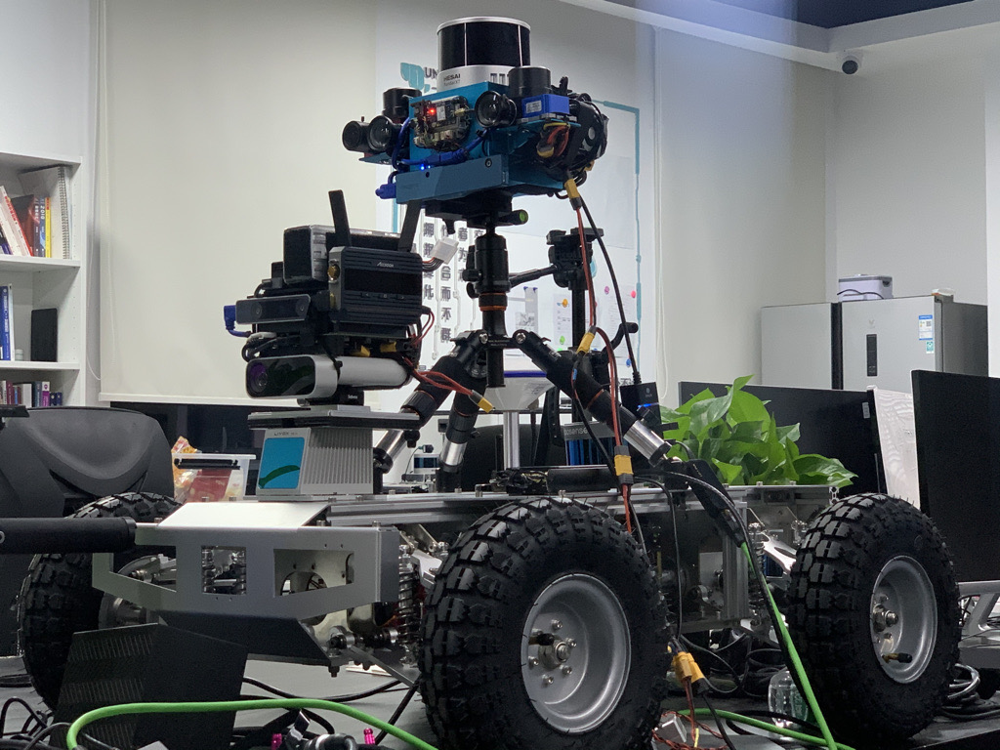

Jin Wu（吴荩/吳藎）
 | Jin Wu, Bachelor in Applied Science |
Research Interests
-
Integrated Navigation
-
Multi-sensor Fusion
-
Machine Vision
-
Rigid-body Dynamics
-
3D Reconstruction
-
Robotic Calibration
-
Structual Chemistry
-
Embedded Electronics and Programming

Attitude/Velocity/Position Estimation and Sensor Calibration for UAV Systems.

Participated work in Tencent Robotics X
Navigation of Autonomous Vehicles and Networks

Human Motion Tracking, Recognition and Deformation

Multi-Camera System
Academic Services
-
1. Outstanding Reviewer for IEEE Transactions on Instrumentation and Measurement (https://ieee-ims.org/publication/ieee-tim/outstanding-reviewers) and Asian Journal of Control.
2. Guest Editor of MDPI Symmetry (Leading Guest Editor: Dr. Chengxi Zhang, Guest Editor: Prof. Chong Li)
3. Special-Session Chair for IEEE ICGNC 2022
4. Editorial Member of Frontiers in Aerospace Engineering
5. Committee Member of IEEE Consumer Electronics Society
Selected Publications
-
Wu, J. (2019). Optimal Continuous Unit Quaternions from Rotation Matrices. AIAA J. Guid. Control Dyn (JGCD).. DOI: 10.2514/1.G004043, (code)（SCI索引号 WOS:000462675100016）
-
Wu, J. (2019) Real-time Magnetometer Disturbance Estimation via Online Nonlinear Programming. IEEE Sensors J.. DOI: 10.1109/JSEN.2019.2901925, (code) (SCI索引号 WOS:000468238700007）
-
Wu, J. (2019) MARG Attitude Estimation Using Gradient-Descent Linear Kalman Filter. IEEE Trans. Autom. Sci. Eng. (T-ASE). DOI: 10.1109/TASE.2020.2978106, (code)（SCI索引号 WOS:000579640900010）
-
Wu, J. (2020) Unified Attitude Determination Problem from Vector Observations and Hand-eye Measurements. IEEE Trans. Aerosp. Elect. Syst. (T-AES). DOI: 10.1109/TAES.2020.2982482, (code)（SCI索引号 WOS:000578773300042）
-
Wu, J. (2020) Rigid 3D Registration: A Simple Method Free of SVD and Eigen-Decomposition. IEEE Trans. Instrum. Meas. (T-IM). DOI: 10.1109/TIM.2020.2987495, (code)（SCI索引号 WOS:000571849100094）
-
Wu, J., Zheng, Y., Gao, Z., Jiang, Y., Hu, X., Zhu, Y., Jiao, J., Liu, M. (2022) Quadratic Pose Estimation Problems: Globally Optimal Solutions, Solvability/Observability Analysis and Uncertainty Description. IEEE Trans. Robotics (T-RO). DOI: 10.1109/TRO.2022.3155880, (C++/MATLAB/Octave/Python/ROS Codes), (supplementary material)
Wu, J., Zhou, Z., Chen, J., Fourati, H. and Li, R. (2016). Fast Complementary Filter for Attitude Estimation Using Low-Cost MARG Sensors. IEEE Sensors J.. DOI: 10.1109/JSEN.2016.2589660, (code).（SCI索引号 WOS:000382355100024）
Wu, J., Zhou, Z., Li, R., Yang, L. and Fourati, H. (2017). Attitude Determination Using a Single Sensor Observation : Analytic Quaternion Solutions and Property Discussion. IET Sci., Meas. Tech.. DOI: 10.1049/iet-smt.2016.0202（SCI索引号 WOS:000410154600007）
Wu, J., Zhou, Z., Gao, B., Li, R., Cheng, Y. and Fourati, H. (2018). Fast Linear Quaternion Attitude Estimator Using Vector Observations. IEEE Trans. Autom. Sci. Eng. (T-ASE). DOI: 10.1109/TASE.2017.2699221, (code)（SCI索引号 WOS:000419498100024，ESI Highly Cited Paper 2017-2019，ESI高被引论文2017-2019）
Wu, J., Zhou, Z., Fourati, H. and Liu, M. (2018) Recursive Linear Continuous Quaternion Attitude Estimator From Vector Observations. IET Rad. Sonar Nav.. DOI: 10.1049/iet-rsn.2018.5028, (code)（SCI索引号 WOS:000448944200002）
Wu, J., Zhou, Z., Fourati, H. and Cheng, Y. (2018) A Super Fast Attitude Determination Algorithm with Accelerometer and Magnetometer. IEEE Trans. Consum. Elect. (T-CE). DOI: 10.1109/TCE.2018.2859625, (code)（SCI索引号 WOS:000446117700016）
Wu, J., Wang, T., Zhou, Z., Yin, H. and Li, Rui. (2017). Accelerometer-Magnetometer Attitude Determination without Reference Information. Int. J. Micro Air Veh.. DOI: 10.1177/1756829318756356（SCI索引号 WOS:000453595400002）
-
Wu, J., Zhou, Z., Zhang, X., Chen, M. and Shao, P. (2019). Real-time Magnetic Disturbance Determination for Micro Air Vehicles via Gravity and Global Navigation Satellite System Measurements. Meas. Sci. Tech.. DOI: 10.1088/1361-6501/aaf553（SCI索引号 WOS:000456272000001）
-
Wu, J., Zhou, Z., Fourati, H., Li, R. and Liu, M. (2019) Generalized Linear Quaternion Complementary Filter for Attitude Estimation from Multi-Sensor Observations: An Optimization Approach. IEEE Trans. Autom. Sci. Eng. (T-ASE). DOI: 10.1109/TASE.2018.2888908, (code)（SCI索引号 WOS:000473649700025）
-
Wu, J., Liu, M. and Qi, Y. (2019) Computationally Efficient Robust Algorithm for Generalized Sensor Calibration Problem AR = RB. IEEE Sensors J.. DOI: 10.1109/JSEN.2019.2924668, (code) (SCI索引号 WOS:000487205800063）
-
Wu, J., Sun, Y., Wang, M. and Liu, M. (2019) Hand-eye Calibration: 4D Procrustes Analysis. IEEE Trans. Instrum. Meas. (T-IM). DOI: 10.1109/TIM.2019.2930710, (code), (data) (SCI索引号 WOS:000546622100035）
-
Wu, J., Liu, M., Li, R. and Zhou, Z. (2019) Fast Symbolic 3-D Registration Solution. IEEE Trans. Autom. Sci. Eng. (T-ASE). DOI: 10.1109/TASE.2019.2942324, (code - MATLAB), (code - C++) (SCI索引号 WOS:000528673100018）
-
Wu, J., Liu, M., Zhang, C., Zhou, Z. (2020) Correspondence Matching and Time Delay Estimation for Hand-eye Calibration. IEEE Trans. Instrum. Meas. (T-IM). DOI: 10.1109/TIM.2020.2987657（SCI索引号 WOS:000571849100095）
-
Wu, J., Lopez, M., Liu, M., Zhu, Y. (2020) A Linear Geometric Algebra Rotor Estimator for Efficient Mesh Deformation. IET Cyber-Syst. Robot.. DOI: 10.1049/iet-csr.2020.0010
-
Wu, J., Shan, S. (2019) Dot-Product Equality Constrained Attitude Determination from Two Vector Observations: Theory and Astronautical Applications. Aerospace. DOI: 10.3390/aerospace6090102（SCI索引号 WOS:000487976300002）
-
Wu, J., Zhang, C., Zhou, Z. (2020) MAV Quaternion Attitude Determination for Accelerometer-Magnetometer Combination: Internal Analysis. Technisches Messen. DOI: 10.1515/teme-2019-0158（SCI索引号 WOS:000580438900007）
-
Wu, J., Liu, M., Huang, Y., Jin, C., Wu, Y., Yu, C. (2020) SE(n)++: An Efficient Solution to Multiple Pose Estimation Problems. IEEE Trans. Cybern. (T-CYB). DOI: 10.1109/TCYB.2020.3015039 (code)
-
Wu, J., Wang, M., Fourati, H., Li, H., Zhang, C., Jiang, Y., Hu, X., Liu, M. (2022) Generalized n-Dimensional Rigid Registration: Theory and Applications. IEEE Trans. Cybern. (T-CYB). DOI: 10.1109/TCYB.2022.3168938 (code)
-
Wu, J., Liu, M., Zhu, Y., Zou, Z., Dai, M., Zhang, C., Jiang, Y., Li, C. (2020) Globally Optimal Symbolic Hand-Eye Calibration. IEEE/ASME Trans. Mechatronics (T-MECH). DOI: 10.1109/TMECH.2020.3019306
-
Sun, R., Shan, A., Zhang, C., Wu, J., Jia, Q. (2020) Quantized Fault-Tolerant Control for Attitude Stabilization with Fixed-Time Disturbance Observer. AIAA J. Guid. Control Dyn. (JGCD). DOI: 10.2514/1.G005465
-
Wu, J., Jiang, Y., Li, C., Sun, R., Zhang, C., Yu, Y., Zhu, Y., Liu, M. (2020) Circuit Synthesis of 3-D Rotation Orthonormalization. IEEE Trans. Circuit. Syst. II: Exp. Briefs (T-CAS2). DOI: 10.1109/TCSII.2020.3027025
-
Wu, J., Liu, M., Zhang, C., Huang, Y., Zhou, Z. (2020) Geomagnetic Orbit Determination: EKF or UKF?. Aircraft Eng. Aerosp. Tech.. DOI: 10.1108/AEAT-11-2020-0279
-
Fan, R., Wang, H., Cai, P., Wu, J., Bocus, J., Qiao, L., Liu, M. (2021) Learning Collision-Free Space Detection from Stereo Images: Homography Matrix Brings Better Data Augmentation. IEEE/ASME Trans. Mechatronics (T-MECH). DOI: 10.1109/TMECH.2021.3061077
-
Wu, J., Zhang, C., Liu, M. (2019) Hybrid Geomagnetic Attitude and Orbit Estimation Using Time-Differential Feedback. Trans. Japan Soc. Aeronaut. Space Sci.. DOI: 10.2322/TJSASS.64.174
-
Wu, J., Wang#, M., Jiang*, Y., Yi, B., Fan, R., Liu, M. (2021) Simultaneous Hand-Eye/Robot-World/Camera-IMU Calibration. IEEE/ASME Trans. Mechatronics (T-MECH). DOI: 10.1109/TMECH.2021.3103995 (code)
-
Jiang, Y., Zhang, K., Wu, J., Zhang, C., Xue, W., Chai, T., Lewis, F.(2021) H∞ based Minimal Energy Adaptive Control with Preset Convergence Rate. IEEE Trans. Cybern. (T-CYB). DOI: 10.1109/TCYB.2021.3061894
-
Wu, J., Li, C., Zhang, C., Jiang, Y., Huang, Y., Wang, L., Liu, M. (2021) Trust-Region Solver of A Nonlinear Magnetometer Disturbance Estimation Problem. IEEE Sensors J.. DOI: 10.1109/JSEN.2021.3092678 (code)
-
Ma, N., Fan, J., Wang, W., Wu, J., Jiang, Y., Xie, L., Fan, R. (2021) Computer Vision for Road Imaging and Pothole Detection: A State-of-the-Art Review of Systems and Algorithms. Transport. Safety Environ.. DOI: 10.1093/tse/tdac026
-
Wu, J., Liu, M., Ding, J., Deng, M. (2019) Robust Rotation Interpolation Based on SO(n) Geodesic Distance. Springer ICVS 2019. DOI: 10.1007/978-3-030-34995-0_12
-
Wu, J., Zhou, Z., Song, M., Liu, M. (2019) Convexity Analysis of Optimization Framework of Attitude Determination from Vector Observations. IEEE CoDIT 2019. DOI: 10.1109/CoDIT.2019.8820652（SCI索引号 WOS:000539199300076）
-
Wu, J., Sarabandi, S., Jiao, J., Huang, H., Xue, B., Geng, R., Wang, L., Liu, M. (2022) Completely Rational SO(n) Orthonormalization.
-
Wu, J., Zhou, Z., Fourati, H., Liu, M. (2021) Lasso Wahba's Problem and Its Analytical Solution for Spacecraft Attitude Determination. 2021 IEEE Conference on Automation Science and Engineering (CASE), Lyon, France. DOI: 10.1109/CASE49439.2021.9551389
-
Wu, J., Zhang, S., Zhu, Y., Geng, R., Fu, Z., Liu, M. (2021) Differential Information Aided 3-D Registration for Accurate Navigation and Scene Reconstruction. 2021 IEEE Conference on Robotics and Automation (ICRA), Xi'An, China. DOI: 10.1109/ICRA48506.2021.9560754